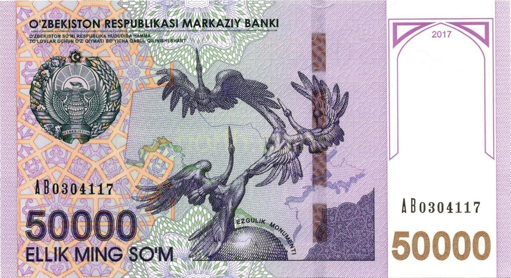

The Basics of Islamic (Halal) Finance: What Riba Is and How the System Works
A facts-based explainer on the prohibition of riba (interest), the core principles and instruments of Islamic finance — murabaha, ijara, mudaraba, sukuk — its global scale, and Uzbekistan's steps in this direction.

Islamic finance is a financial system structured according to the rules of Sharia. At its center is the prohibition of riba (interest). The following sets out the system's core concepts, instruments, global scale and its status in Uzbekistan — on a facts-only basis, without religious commentary or opinion.
What riba is
Riba means “increase” or “excess” in Arabic and, in practice, refers to a predetermined, guaranteed extra amount paid on top of a loan — that is, interest or usury. In Islamic jurisprudence, conventional loan interest is treated as riba.
…Allah has permitted trade and forbidden interest (riba).
— Qur'an, Surah al-Baqarah, 2:275
Core principles
Islamic finance rests on several principles: the prohibition of riba; the prohibition of gharar — excessive uncertainty or deception in a contract; the prohibition of maysir — gambling and pure speculation; the requirement that returns derive from a real, tangible asset or economic activity, with profit and loss shared (risk-sharing); and the prohibition of financing forbidden (haram) sectors — such as alcohol, pork, gambling and interest-based finance.
Core instruments
- Murabaha — the financier buys an asset and resells it to the client at a disclosed cost-plus-markup price, payable in instalments
- Ijara — buying an asset and leasing it to the client for a fixed term and agreed rental fee
- Mudaraba — a partnership where one party provides capital and the other labor/expertise, sharing profit by a pre-agreed ratio
- Musharaka — a joint venture in which all parties contribute capital and share both profit and loss
- Sukuk — certificates giving a share in a real asset and its returns, rather than interest-bearing debt (Islamic “bonds”)
- Takaful — a mutual guarantee in which members contribute to a common fund to cover defined losses (Islamic insurance)
Standards and institutions
Several international bodies standardize and develop the industry. AAOIFI (based in Bahrain, registered in 1991) issues Sharia, accounting, auditing and governance standards. The IFSB (Kuala Lumpur, Malaysia; established 3 November 2002) sets prudential and regulatory standards. The Islamic Development Bank (IsDB, Jeddah, Saudi Arabia; began operating in October 1975, with 57 member states) finances Sharia-compliant development in member countries.
Global scale
- Total industry assets: $5.98 trillion at end-2024 (~+21%)
- Projected for 2029: ~$9.7 trillion
- Leading markets (2024): Iran $2.24tn, Saudi Arabia $1.31tn, Malaysia $761bn
- Sukuk outstanding surpassed $1 trillion in 2024
According to the ICD–LSEG report, global Islamic finance assets reached $5.98 trillion at the end of 2024 and are expected to grow to about $9.7 trillion by 2029. Islamic banking makes up roughly 72 percent of the industry's assets.
In Uzbekistan
Uzbekistan acceded to the Islamic Development Bank in 2003. The systematic move toward Islamic finance began gradually: in 2022 microfinance organizations were permitted to provide services on Islamic principles, and in 2024 detailed rules were introduced for instruments such as mudaraba, murabaha, musharaka, ijara and salam.
A dedicated Islamic banking law was signed on 27 March 2026 and took effect on 29 June 2026 — the country's first comprehensive legal framework for Islamic banking. Once the law took effect, an Islamic Finance Council was set up under the Central Bank; the Central Bank joined AAOIFI on 27 May 2026.
An important note
The above is a factual account of Islamic-finance concepts and verified events, not a religious ruling or advice. For specific Sharia questions, consult qualified scholars; for financial decisions, licensed institutions.